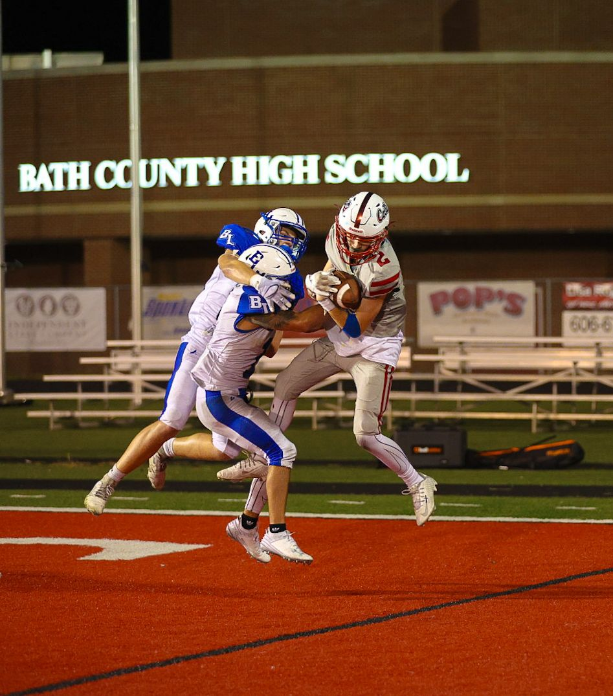
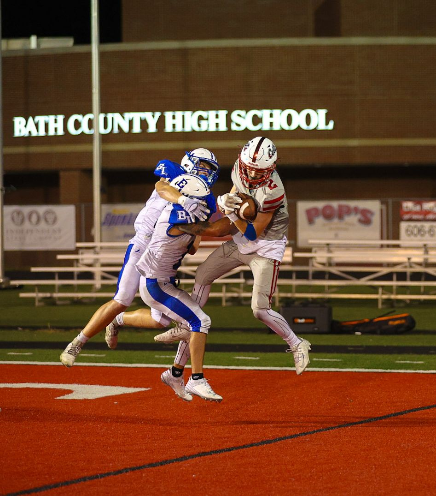

Logan Jones is a Junior WR/DB. After an impressive performance last season, Logan is looking forward to hitting the field and making some waves this season. In the offseason, you can see this multi-sport athlete running track for the high school.
Logan's football career has included:
- Kentucky Middle School Football All-Stars
- Kentucky Future Stars
- 2023 All EKC Honorable Mention
- 2024 All EKC 2nd Team
- Featured in an article by Kevin Moses.
 

2024 Season Videos
Hudl highlights can be found here.
Player Stats
Height/Weight: 5'10 / 150 lbs
GPA: 3.7
ACT:18
Honors:
Bench 200 lbs
Squat: 275 lbs
Deadlift: 315 lbs
40 Yard Dash: 4.7
Broad Jump: